Q9 · E Q U A R S · p29
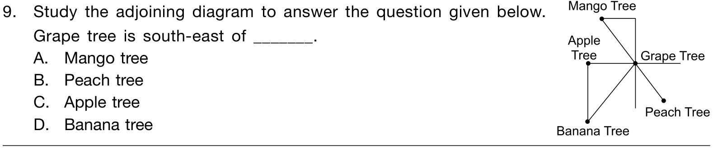

A
Mango tree
B
Peach tree
C
Apple tree
D
Banana tree
Answer A
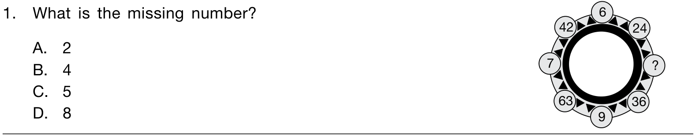
What is the missing number?
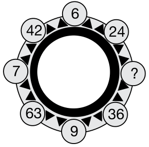
2
4
5
8
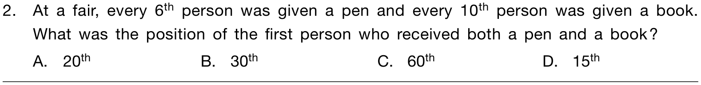
At a fair, every 6th person was given a pen and every 10th person was given a book. What was the position of the first person who received both a pen and a book?
20th
30th
60th
15th
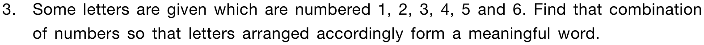
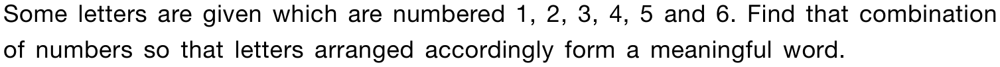
Option A
Option B
Option C
Option D
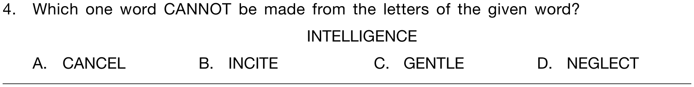
Which one word cannot be made from the letters of the given word?
Intelligence
CANCEL
INCITE
GENTLE
NEGLECT
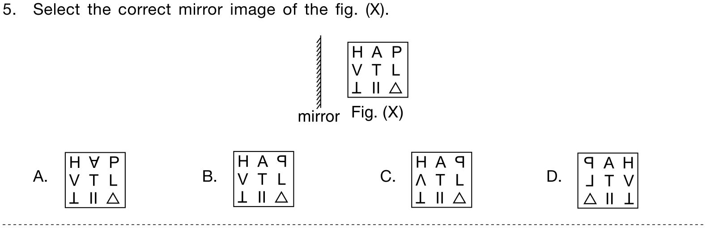
Select the correct mirror image of the fig. (X).
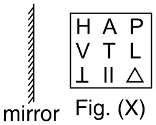
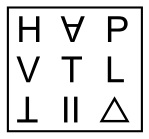
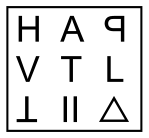
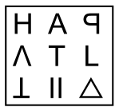
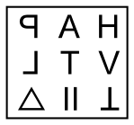
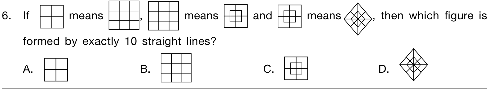
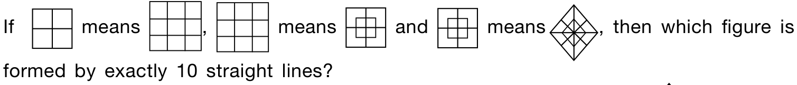
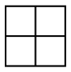
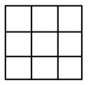
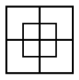
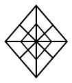
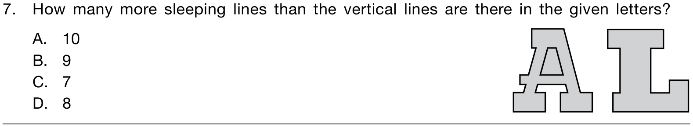
How many more sleeping lines than the vertical lines are there in the given letters?
10
9
7
8
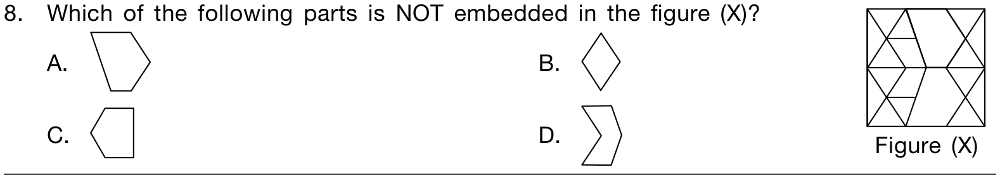
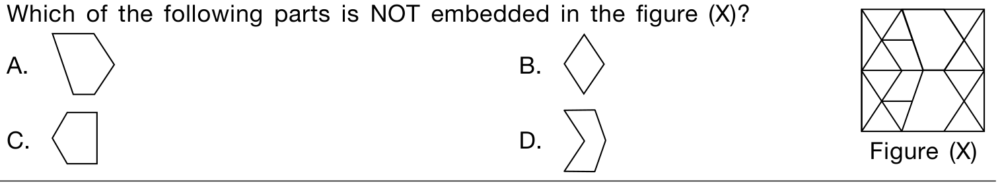
Option A
Option B
Option C
Option D

Mango tree
Peach tree
Apple tree
Banana tree
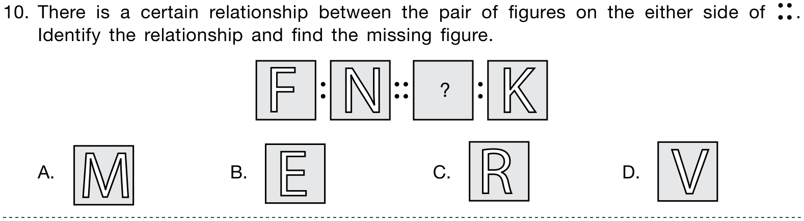
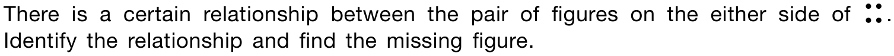
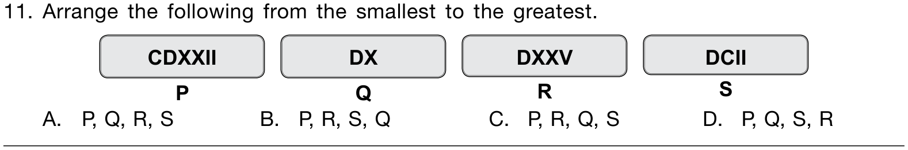
Arrange the following from the smallest to the greatest.
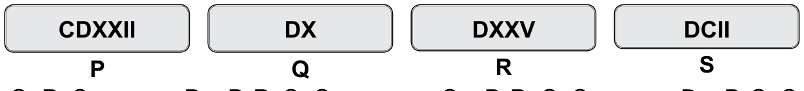
P, Q, R, S
P, R, S, Q
P, R, Q, S
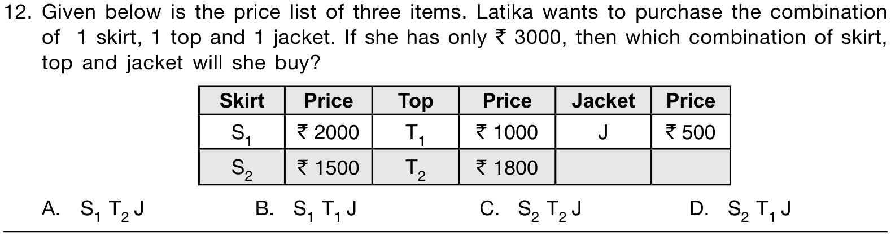
Given below is the price list of three items. Latika wants to purchase the combination of 1 skirt, 1 top and 1 jacket. If she has only ₹ 3000, then which combination of skirt, top and jacket will she buy?
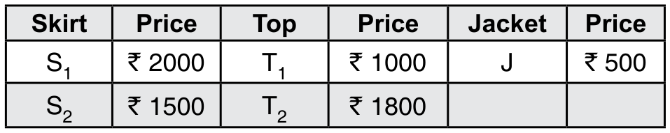
S1 T2 J
S1 T1 J
S2 T2 J
S2 T1 J
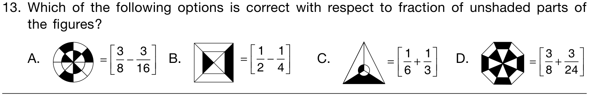
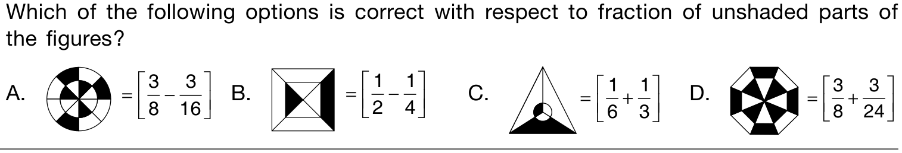
Option A
Option B
Option C
Option D
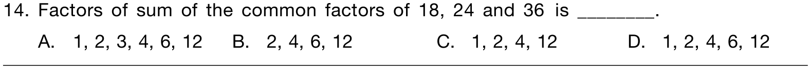
Factors of sum of the common factors of 18, 24 and 36 is ________.
1, 2, 3, 4, 6, 12
2, 4, 6, 12
1, 2, 4, 12
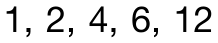
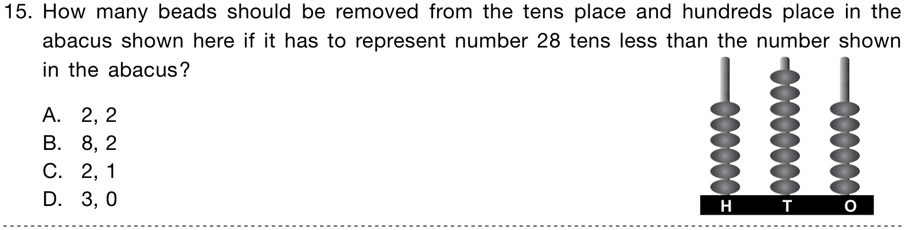
How many beads should be removed from the tens place and hundreds place in the abacus shown here if it has to represent number 28 tens less than the number shown in the abacus?
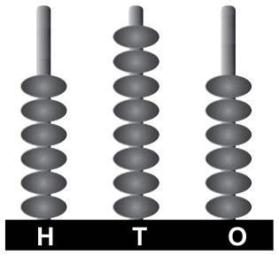
2, 2
8, 2
2, 1
3, 0
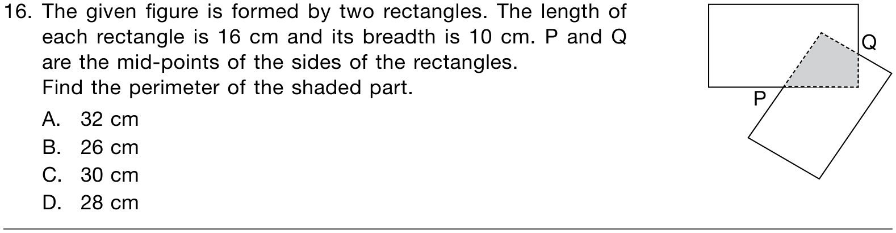
The given figure is formed by two rectangles. The length of each rectangle is 16 cm and its breadth is 10 cm. P and Q are the mid-points of the sides of the rectangles.
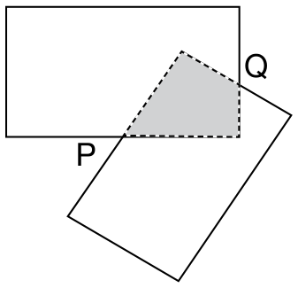
Find the perimeter of the shaded part.
32 cm
26 cm
30 cm
28 cm
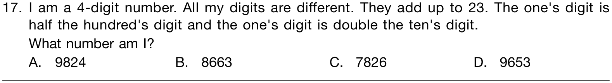
I am a 4-digit number. All my digits are different. They add up to 23. The one's digit is half the hundred's digit and the one's digit is double the ten's digit.
What number am I?
9824
8663
7826
9653
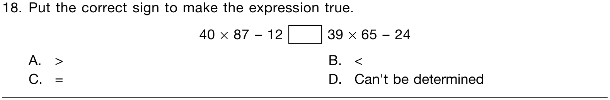
Put the correct sign to make the expression true.
40 × 87 – 12 39 × 65 – 24
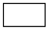
>
<
=
Can't be determined
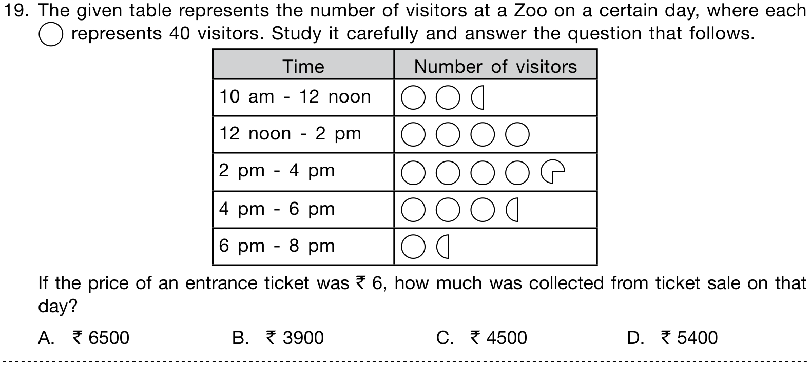
The given table represents the number of visitors at a Zoo on a certain day, where each
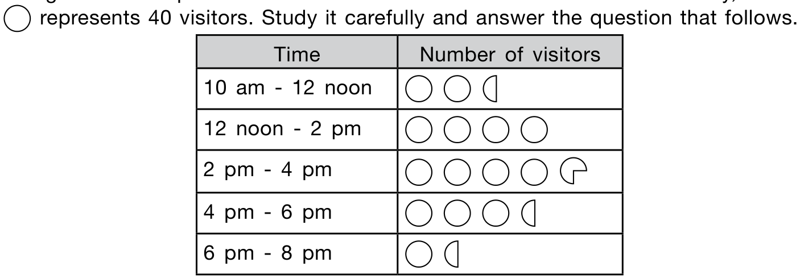
If the price of an entrance ticket was ₹ 6, how much was collected from ticket sale on that day?
₹ 6500
₹ 3900
₹ 4500
₹ 5400
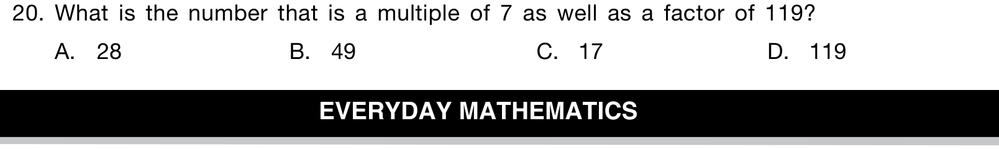
What is the number that is a multiple of 7 as well as a factor of 119?
28
49
17
119
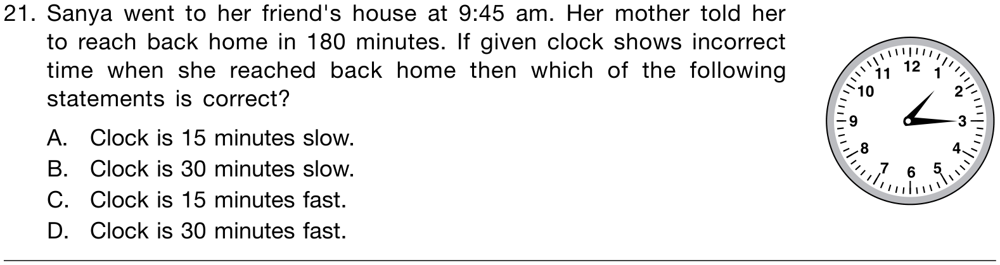
Sanya went to her friend's house at 9:45 am. Her mother told her to reach back home in 180 minutes. If given clock shows incorrect time when she reached back home then which of the following statements is correct?
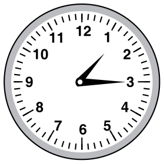
Clock is 15 minutes slow.
Clock is 30 minutes slow.
Clock is 15 minutes fast.
Clock is 30 minutes fast.
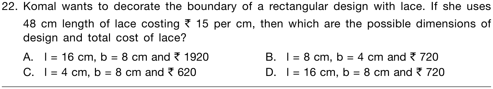
Komal wants to decorate the boundary of a rectangular design with lace. If she uses 48 cm length of lace costing ₹ 15 per cm, then which are the possible dimensions of design and total cost of lace?
l = 16 cm, b = 8 cm and ₹ 1920
l = 8 cm, b = 4 cm and ₹ 720
l = 4 cm, b = 8 cm and ₹ 620
l = 16 cm, b = 8 cm and ₹ 720
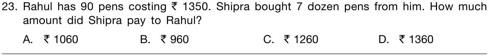
Rahul has 90 pens costing ₹ 1350. Shipra bought 7 dozen pens from him. How much amount did Shipra pay to Rahul?
₹ 1060
₹ 960
₹ 1260
₹ 1360
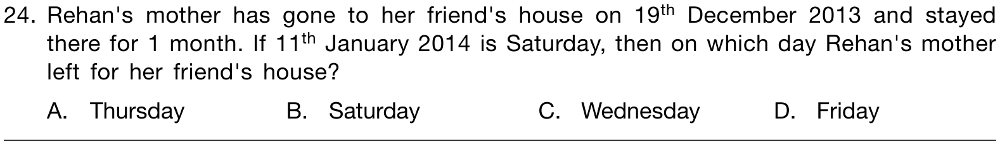
Rehan's mother has gone to her friend's house on 19th December 2013 and stayed there for 1 month. If 11th January 2014 is Saturday, then on which day Rehan's mother left for her friend's house?
Thursday
Saturday
Wednesday
Friday
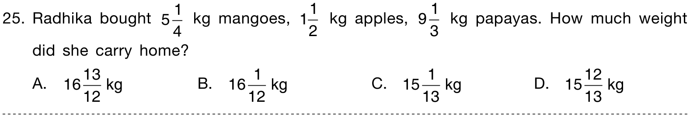
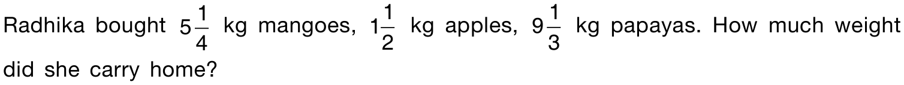
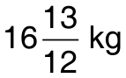
323 m
333 m
433 m
443 m
Garima went to movie with her two friends. She gave ₹ 1000 to counter for movie tickets, 1 bucket of popcorn and 3 pepsi cans, what information is needed to find the amount she will get back?
Movie name
Movie time
Number of tickets
Cost of a movie ticket
Ankur earns ₹ 20,098 in a month. Every month he spends ₹ 15,026 and saves the rest. How much will he save in 2 years?
₹ 21,728
₹ 2,20,728
₹ 1,21,728
₹ 2,21,728
Sanchi takes 24 mins 25 sec to draw 15 rectangular designs. How long does she take to draw 30 rectangular designs if all are drawn in equal period of time?
48 mins 50 sec
49 mins 50 sec
49 mins 10 sec
48 mins 10 sec
Manha can only pack 16 apples into a box. If there are 560 apples to be packed, how many boxes of apples will be there?
35
15
45
25
A number multiplied by 5 and then added to 209, become 364. Three times of the number is _________.
Which of the following statements is/are true with respect to answer of the above question?
Statement 1 : Greater than 85 and less than 95.
Statement 2 : Number is multiple of 3.
Only statement 1 is true
Only statement 2 is true
Both statements 1 and 2 are true
Neither statement 1 nor 2 is true
Fill in the blank.
Subtract 65 minutes from the sum of 140 minutes and _________. The answer is 2 hrs. 35 mins.
1 hr 20 mins
1 hr
1 hr 40 mins
1 hr 25 mins
Which one of the following is incorrect?
100 × (87) = 8700
Which one of the following figures, each made up of 3 cm squares, has the greatest perimeter?
A number is greater than 50 but smaller than 59. It has only two factors. What is the number?
51
55
53
57